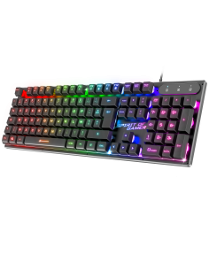
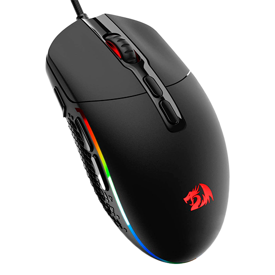

Teclados Gamers
Os teclados gamers oferecem uma experiência de digitação superior com teclas mecânicas e iluminação RGB.
Mouses Gamers
Mouses gamers são projetados para alta precisão e conforto, com várias opções de personalização.
Headsets Gamers
Headsets gamers proporcionam som envolvente e comunicação clara, essenciais para jogos multiplayer.